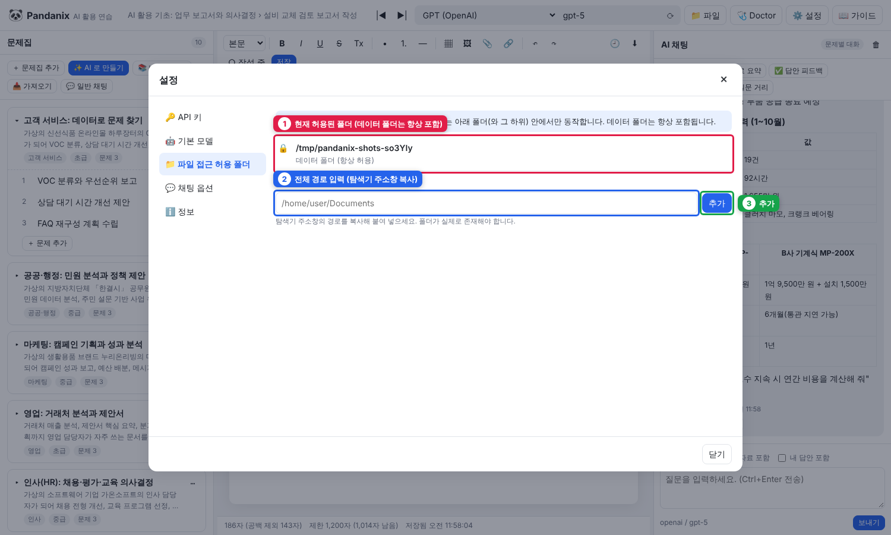
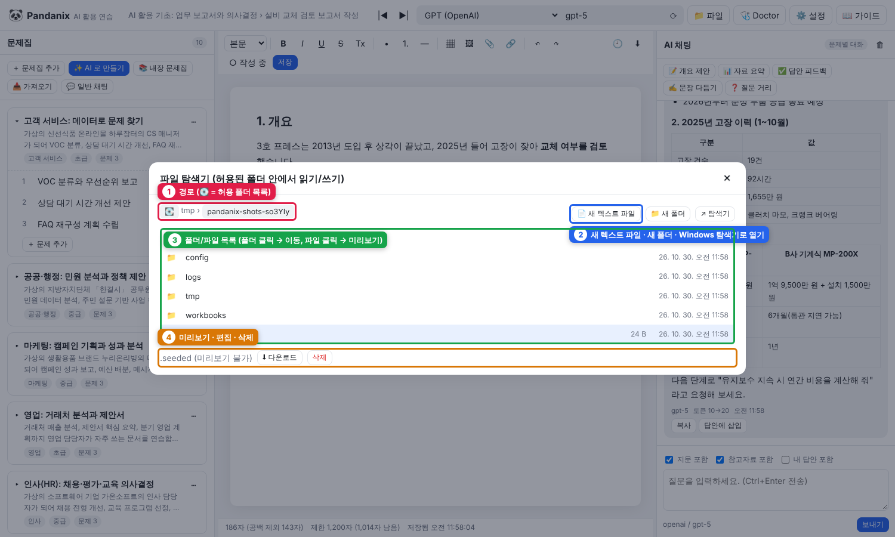

7. 파일 접근 (Windows 폴더 읽기·쓰기)
Pandanix 는 허용한 폴더 안에서만 로컬 파일을 다룹니다. 데이터 폴더(data/)는 항상 허용됩니다.
허용 폴더 추가

① 현재 허용된 폴더 ② 전체 경로 입력 ③ 추가
- ⚙️ 설정 → 📁 파일 접근 허용 폴더
- 전체 경로 입력 (탐색기 주소창에서 복사) 예:
C:\Users\홍길동\Documents\업무자료 - 추가 → 목록에 표시되면 완료 (존재하지 않는 폴더는 거부됨)
하위 폴더는 자동으로 포함됩니다.
C:\전체를 추가하는 것은 권장하지 않습니다.
어디에서 쓰이나
| 기능 | 위치 |
|---|---|
| 📁 파일 (상단바) | 파일 탐색기: 폴더 이동, 텍스트 미리보기·편집·저장, 새 파일/폴더 만들기, 삭제, Windows 탐색기로 열기 |
| 참고자료 → 📁 로컬 파일에서 | 로컬 파일을 문제의 참고자료로 복사 |
| 에디터 → 내보내기 → 로컬 폴더에 저장 | 답안을 md/html 로 지정 폴더에 저장 |
| 문제집 ⋯ → 폴더로 내보내기 / 📥 가져오기 | 문제집 폴더 복사 |
파일 탐색기 화면

① 경로(💽 = 허용 폴더 목록, 회색 조각은 허용 범위 밖) ② 새 텍스트 파일 · 새 폴더 · Windows 탐색기로 열기 ③ 목록 ④ 미리보기·편집·삭제
- 상단 경로 조각(breadcrumb) 클릭으로 이동, 💽 로 허용 폴더 목록
- 텍스트 파일(md, txt, csv, json 등)은 클릭하면 미리보기 → ✏️ 편집 → 저장
- 📄 새 텍스트 파일 / 📁 새 폴더 로 생성, 삭제 는 확인 후 영구 삭제
- ↗ 탐색기 는 현재 폴더를 Windows 탐색기로 엽니다
제한
- 2MB 보다 큰 텍스트는 미리보기 불가(다운로드는 가능)
- 허용 폴더 밖 경로는
403 허용되지 않은 경로로 거부됩니다. 이는 의도된 보호 동작입니다